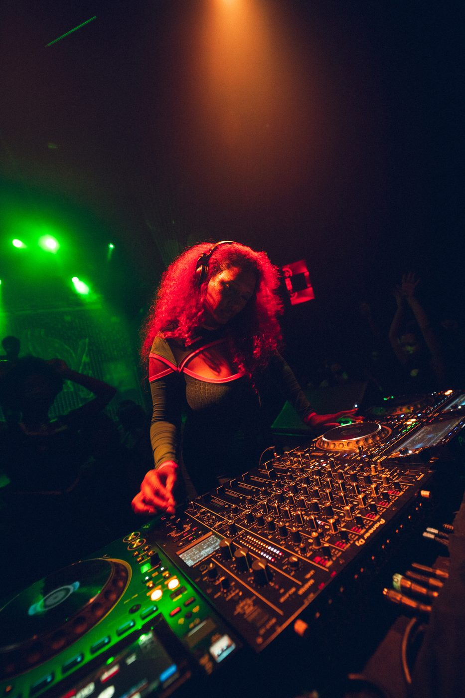
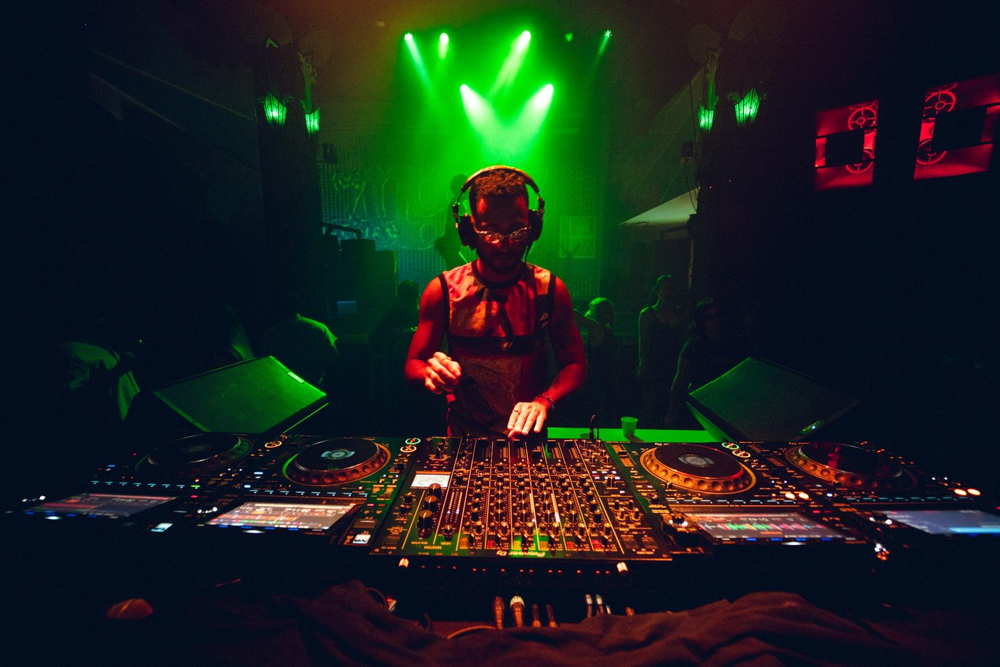
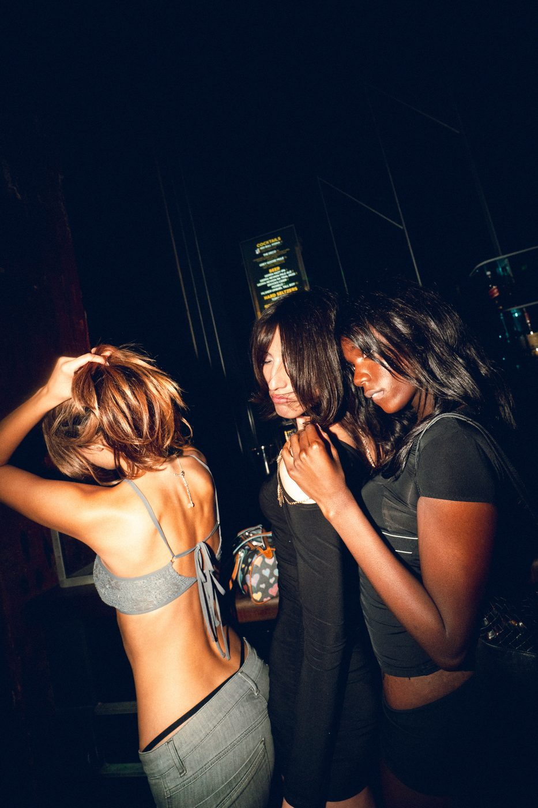
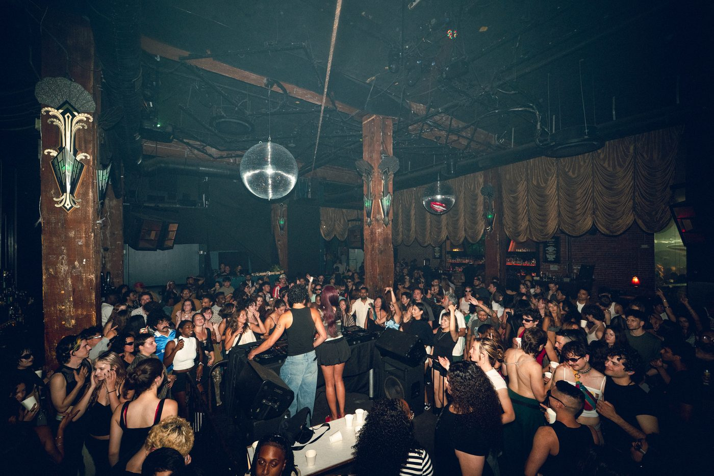

Keep Hush
08/15/2026
Andyland, BAE BAE, felipe d., Femme Jatale, Julia Rose, Profesito




Mostly Cloudy is a San Francisco-based creative house whose scope expands across talent representation, visual arts, nightlife experiences and music projects. With a sharp focus on emerging queer and femme artists across the Latin diaspora, Mostly Cloudy builds spaces where sounds, ideas, culture and art intersect.